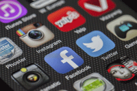

Social Media
Social media can be an amazing thing. We all use it every day in great ways: connecting with people, access to information, fun and enjoyment, shopping, etc. However social media has its cons. information overload, peer pressure and cyber bullying, privacy issues. Everything you type, post, and share will never truly delete. Even when you think it will. As a student, you might not worry about everything you post and share, but one day you will. You will need to worry about how you social media makes you appear for when you are applying for a job, starting a business, or building a brand.
What should you do
- Understand the permanency of the Internet. Before posting; sharing, or typing anything ask yourself these questions
- Is this something I mind future employers seeing?
- What is my motive in posting this?
- Could this post hurt someone or myself?
- Is anything I'm sharing confidential or sensitive information
- Keep your social media accounts and information PRIVATE
- Go take the time to make sure all your social media accounts are private
- Stop sharing your location at all times
- Don't ever share your full name. birthday: home address: etc
- Is anything I'm sharing confidential or sensitive information?
- If you feel uncomfortable with things you have shared and posted in the past and feel overwhelmed by trying to clean up your past Then start fresh by taking the time to delete your current social media accounts and create a new account.
For most people social media is apart of our everyday lives Therefore it is important to know that we need to take the time to be aware of what you are posting and sharing. as someone is always watching. There is nothing to be afraid of if you are choosing to make good choices online.
Take Action
- Go remove a post or a comment that you aren't the most proud of
- Go make one of your social media accounts private.
- Go turn off your location sharing.
If you would like to learn more information about how to behave online check out the following links: